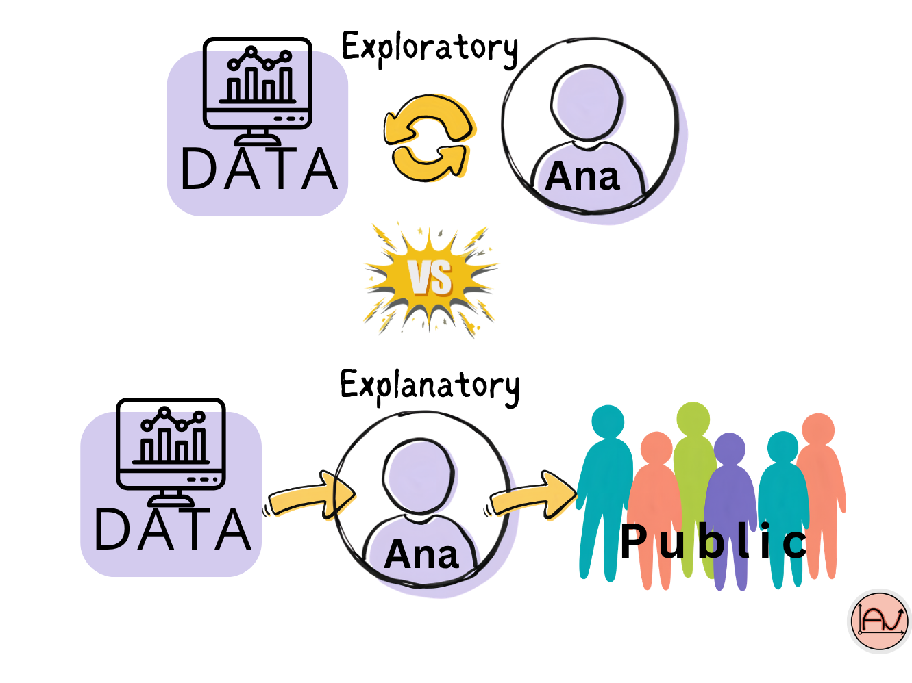
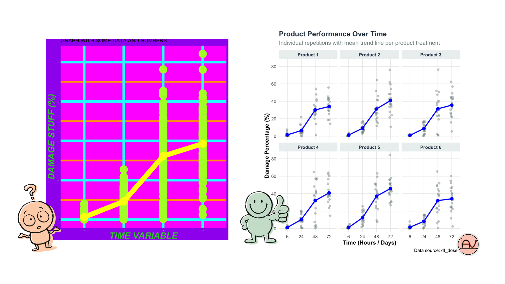

Data Viz: 5 Tips to Make Your Charts Talk
You know your data inside out. You’ve been staring at it for weeks, maybe months. So when you build a chart, the message feels obvious to you.
But here’s the catch: your audience hasn’t lived with your data like you have. What’s crystal clear to you as the expert can be completely confusing to them.
Good data visualization isn’t about showing everything you found, it’s about simplifying and telling a story your audience can actually follow. Here are 5 tips to get there.
1. Know the Difference: Exploratory vs. Explanatory Charts
Let’s dig into this first, because it changes everything else.
Exploratory charts are for you. They help you see first patterns and trends in your data — outliers, errors, unit mismatches, distributions. Think histograms, boxplots, scatterplots. Messy, quick, informative. Nobody else needs to see these.
Explanatory charts are for your audience. These are the ones you polish and publish — in a report, a presentation, a paper. Their only job is to make a point and lead your audience straight to the takeaway. If you skip this distinction, you risk showing raw exploratory charts to people who don’t have the context to read them — and you waste everyone’s time, including your own.
👉 Rule of thumb: if it’s exploratory, keep it messy and fast. If it’s explanatory, make every element earn its place and use strong, confident language around it.

2. Clarify Your Message First
Before you even open your plotting library, ask yourself:
What do these variables actually represent, in plain terms?
Who is my audience, and what do they already know?
What do I want my audience to react to? Which takeaway?
Once you know your message, use your chart to reinforce it: add target lines, reference lines, or annotations that point straight at your takeaway. Just don’t overdo it — an annotation on every data point defeats the purpose.
3. Choose the Right Chart for the Job
Not every finding needs a chart. Sometimes a single number, a short sentence, or a simple table communicates faster — a percentage on its own can be more impactful than a graph around it.
When you do need a chart, let your goal decide the type:
Comparing categories (bigger vs. smaller): vertical bar charts work well for a few categories; order them ascending or descending when it helps the story.
Comparing many categories, or categories without a natural order: horizontal bar charts scale better and stay readable.
Showing change over time (growth, decline, trends): line charts are the go-to.
Showing parts of a whole: stacked bars work well, especially across categories or time.
Showing a single proportion (this part vs. the rest): pie charts — yes, the famous, often-criticized pie chart. They get a bad reputation because comparing slice sizes isn’t very objective, and they fall apart with more than 5–6 slices. But for one proportion, clearly labeled, they can still do the job.
4. Simplify, Simplify, Simplify
Overcomplication is the fastest way to lose your audience. Watch out for:
Too many lines on one chart
Too many colors
3D effects — they distort perception and make comparison genuinely harder. Avoid them, always.
Ask yourself: what does each element actually contribute? If the answer is “nothing,” cut it.
Practical habits:
Keep only the labels your audience actually needs.
Remove gridlines and background noise you don’t need — simplify what’s behind your data, not just the data itself.
Start your axis at 0 — unless you have a specific, well-justified reason to zoom in (e.g., highlighting a sharp change starting at a specific point).
Use labels intelligently — they should clarify, not clutter.
5. Use Color With Intention
Color is one of your most powerful tools — and one of the most misused. Skip the rainbow palette and your personal favorites. Instead, use color strategically to highlight your insight, not to decorate your chart.
A few principles:
Think about contrast — your key data point should visually stand out.
Be mindful of context: red often reads as “danger” or “alert,” so use it deliberately, not by default. Neutral tones like gray, black, or blue are often safer as your base palette.
Whatever you choose, stay consistent — the same category should always get the same color throughout your report or dashboard.
Want to go from “good enough” charts to visuals that actually make people act on your data? I offer training and one-on-one coaching in R, Python, and data visualization tailored to your field, your data, and your goals.
So if you want to pass from this to this :

Get in touch to plan a session !
References :
CartONG, 2022. Boîte à outils visualisation de données. [en ligne : https://cartong.pages.gitlab.cartong.org/learning-corner/fr/8_further_data_visualization]
Storytelling data blog : http://storytellingwithdata.com/blog
This post was written with the help of Claude (Anthropic’s AI), based on my own original ideas and experience.